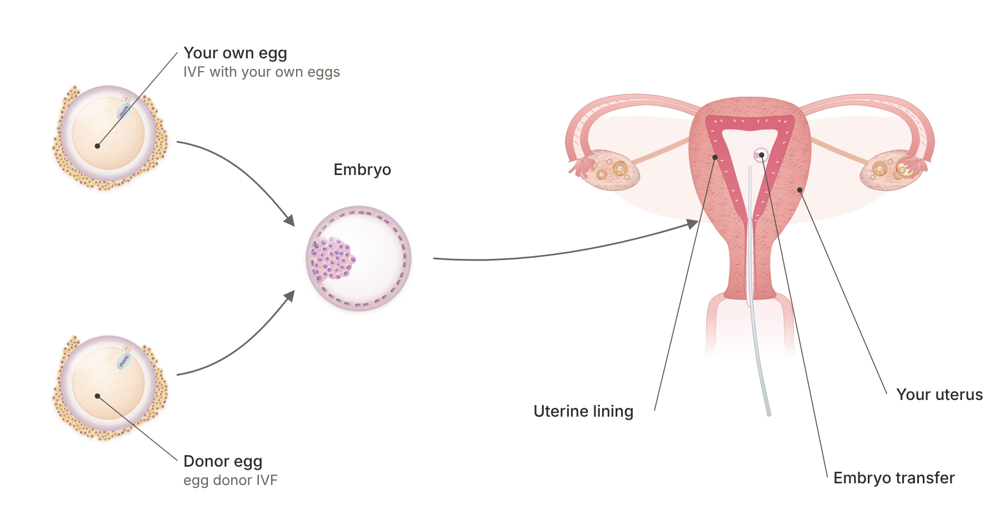

Quick answer: After 40, you have two strong paths to a baby: IVF with your own eggs, often supported by ovarian rejuvenation, and egg donor IVF, which uses eggs from a young, screened donor. Egg donor IVF gives the highest live birth rate per transfer at any age, while your own eggs keep your genetic link. The right choice depends on your ovarian reserve, how many cycles you have already done, your timeline and how much the genetic connection matters to you.
In this article
Using donor eggs is the faster, more predictable route to a live birth once egg quality is the main barrier, and IVF with your own eggs is the route that keeps your genes in the picture. Neither is a lesser choice. Many women at Rejuvenating Fertility Center try one, then the other, and some plan both from day one.
Here is how the two paths compare at a glance.
Factor | IVF with your own eggs | Egg donor IVF |
Whose genes | Yours | The donor's (and your partner's or sperm donor's) |
Who carries the pregnancy | You | You |
Main driver of success | Your age and egg quality | The donor's age (usually 21 to 34) |
Live birth odds after 42 | Lower per retrieval, rising with each extra cycle | About 53.5% per transfer with fresh donor eggs |
Time to start | Can begin next cycle | Weeks to months for donor matching |
Typical number of cycles | Often several, sometimes with embryo banking | Often one donor cycle gives several embryos |
Women describe this choice in very personal terms. One wrote, "I would struggle if I knew that he or she had nothing of my genes." Another, a mother through egg donation, said simply, "the child was ours regardless." Both feelings are valid, and both are worth bringing to your consultation.
IVF with your own eggs means stimulating your ovaries, retrieving eggs, fertilizing them in the lab and transferring an embryo back to your uterus. After 40, the number of eggs you make drops and a larger share of them carry chromosome errors, so each cycle produces fewer healthy embryos. That is the challenge. The answer is a plan built around your reserve, not a standard protocol.
At RFC, women with low anti-Müllerian hormone (AMH) or high follicle-stimulating hormone (FSH) can choose from natural, mini and conventional IVF. Gentler protocols aim for fewer, healthier eggs per cycle with less medication. Many women bank embryos over two or three cycles so they have more than one chance at transfer. If your FSH is high, our guide to fertility treatment for high FSH explains why more medication is rarely the answer.
Some women add PRP and adipose-PRP ovarian rejuvenation before their next own-egg cycle. These treatments place growth factors from your own blood, and in adipose-PRP your own fat-derived cells, into the ovary. They are designed to support the follicles that remain.
RFC published the first live births after adipose-derived stem cells and PRP in women 45 and older (American Journal of Stem Cells, 2025). One woman with diminished ovarian reserve conceived naturally six months after treatment and delivered at 47. Another, 45, with several failed IVF attempts, had a baby from her only euploid (chromosomally normal) embryo, made three months after treatment. You can read how the two options differ in PRP for ovaries vs. adipose-PRP.
In egg donor IVF, a young, screened donor provides the eggs, they are fertilized with your partner's or a donor's sperm, and the embryo is transferred to your uterus. You carry the pregnancy and give birth. The ASRM egg donation fact sheet notes that donors are usually between 21 and 34 and are screened for infections, genetic conditions and their personal and family medical history.
Here is how egg donor IVF works, step by step:
Consultation and testing. You have a uterine evaluation and blood work, and your partner has a semen analysis.
Choosing a donor. You choose a known donor, a fresh-cycle donor, or frozen eggs from an egg bank.
Preparing your lining. You take estrogen to build the uterine lining (endometrium), then progesterone around the time of egg retrieval or thaw.
Fertilization. The eggs are fertilized in the lab, often by ICSI (injecting one sperm into each egg).
Embryo transfer. An embryo is placed in your uterus 3 to 5 days after fertilization, and extra embryos can be frozen.
Pregnancy test. A blood test about two weeks later confirms the result.
RFC's donor egg program reports a 95% egg thaw survival rate and an 82% clinical pregnancy rate. For the full process, read our donor eggs procedure guide.
Both work well. In a national analysis of 30,160 US donor egg cycles, fresh donor eggs gave a live birth rate of 51.1% per cycle start versus 39.7% for frozen (Journal of Ovarian Research, 2018). The 2021 ASRM guideline found no significant difference in pregnancy rates per transfer and calls frozen donor eggs a reasonable option. Frozen eggs usually mean faster matching and simpler scheduling.
The research is clear on one point: the age of the egg, not the age of the uterus, drives most of the difference in success. That is why donor eggs perform well even when the woman carrying the pregnancy is in her 40s.
With your own eggs, success per retrieval falls with age, and more eggs means better odds. A Human Reproduction study of 4,500 women aged 38 and older found cumulative live birth rates per retrieval of 25.9% at 38 to 39, 16.4% at 40 to 41, 7% at 42 to 43 and 1.2% from 44 onward. Those are averages from one large center, not your prognosis. They are the reason RFC builds own-egg plans around embryo banking, gentle stimulation and rejuvenation rather than one standard cycle.
With donor eggs, the recipient's age matters far less. An analysis of 27,959 fresh donor egg cycles from the Society for Assisted Reproductive Technology (Fertility and Sterility, 2014) found that recipients have stable pregnancy outcomes before age 45, with somewhat lower rates from 45 onward. ASRM reports an average birth rate of 53.5% per embryo transfer with fresh donor eggs.
Study | Who was studied | What it found |
Devesa et al., Human Reproduction, 2018 | 4,500 women 38+ using their own eggs | Cumulative live birth per retrieval: 25.9% at 38–39, 16.4% at 40–41, 7% at 42–43 |
Yeh et al., Fertility and Sterility, 2014 | 27,959 fresh donor egg cycles | Recipient outcomes stable before age 45 |
Kushnir et al., Journal of Ovarian Research, 2018 | 30,160 donor egg cycles | Live birth per cycle start: 51.1% fresh vs. 39.7% frozen |
Clarke et al., 2025, J Assist Reprod Genet | 353 women using donor eggs | Live birth after first donor transfer: 59.2% donor-first vs. 53.1% after own-egg IVF |
Lee and Zhang, BMC Health Services Research, 2022 | Cost model, women 35 to 45 | Donor eggs gave the highest cumulative live birth rate |

Donor egg pregnancies need careful prenatal care. A meta-analysis in JBRA Assisted Reproduction (2018) found a higher risk of preeclampsia, a blood pressure condition in pregnancy, with donor eggs than with IVF using your own eggs (odds ratio 4.50). This is a risk we plan for, not a reason to avoid treatment. Screening before transfer, single embryo transfer and close monitoring with your obstetrician are standard parts of the plan.
The best path is the one that matches your body, your history and your values. Here is how we think about it with patients.
IVF with your own eggs often suits you if:
You still respond to stimulation and make at least a few eggs per cycle.
The genetic connection is very important to you.
You are open to two or three cycles, or to adding ovarian rejuvenation first.
You froze eggs or embryos earlier, through egg freezing or embryo banking.
Egg donor IVF often suits you if:
You have premature ovarian insufficiency (POI) or very few eggs. Our POI guide covers both paths.
You have had several own-egg cycles without a euploid embryo.
Time matters most and you want the highest odds per transfer.
You carry a genetic condition you do not want to pass on.
If you are under 40 with a normal ovarian reserve, our sister clinic Aurea Fertility Center focuses on straightforward IVF and egg freezing. For women 44 and older, our article on pregnancy at 45 walks through four real situations and the path that fits each.
No. Trying your own eggs first does not appear to lower your later success with donor eggs, but it does add time. This is the question many women ask when they wonder, as one put it, "Did you wish you had just got on and used donor eggs?"
A 2025 study in the Journal of Assisted Reproduction and Genetics followed 353 women with a poor prognosis who used donor eggs. 157 went straight to donor eggs, and 196 tried IVF with their own eggs first. The live birth rate after the first donor embryo transfer was similar: 59.2% in the donor-first group and 53.1% in the own-eggs-first group. Across all donor transfers, rates were 50.4% and 49.2%.
The difference was time. Women who started with donor eggs reached the transfer that led to a live birth in 13.2 months on average, compared with 21.0 months for women who tried their own eggs first. So the decision is less about losing your chance and more about how you want to spend your time, money and energy.
Two or more own-egg cycles with no euploid embryo.
Very low egg numbers despite different protocols.
A timeline that matters to you, such as wanting more than one child.
A feeling that you are ready, which is reason enough.
There is no right moment set by a number. Some women switch after one cycle and, like one mother who wrote, "We were very pragmatic and have never looked back." Others want to know they tried everything with their own eggs first. Both choices are respected at RFC.
The cost of egg donor IVF is usually higher per cycle than IVF with your own eggs, but it can be lower per baby when your own-egg odds per cycle are low. A 2022 cost model in BMC Health Services Research found that donor eggs gave the highest cumulative live birth rate for women 35 to 40, while standard IVF with your own eggs fell to a 1.6% cumulative live birth rate by 45. Donor egg treatment and genetic testing of embryos both carried higher upfront costs.
How much is egg donor IVF? It depends on these factors:
Fresh or frozen eggs. Frozen bank eggs often cost less and skip donor stimulation.
Donor compensation and agency fees. These vary widely by program.
Genetic testing. Embryo testing (PGT-A) adds cost but can reduce failed transfers.
Number of transfers. One donor cycle often gives several embryos, so later frozen transfers cost less.
Your own-egg plan. Each extra own-egg cycle adds medication, monitoring and lab fees, and time.
RFC lists its fees openly on our pricing page, and our team will walk you through what is included before you start.
Based on my AMH, FSH and past cycles, how many eggs and euploid embryos can I expect per own-egg cycle?
Would rejuvenation or a gentler protocol change my plan?
If I choose donor eggs, fresh or frozen, and how long is the wait?
Which tests should I have first, such as a uterine evaluation or an immunology workup?
Can we plan both paths, so I am not starting from zero if I switch?
If you live outside New York or Connecticut, you can do most monitoring locally and travel to RFC for retrieval or transfer. You can meet our doctors and read why patients choose RFC before your first visit.
Per transfer, yes. ASRM reports an average birth rate of 53.5% per transfer with fresh donor eggs, and donor recipients have stable outcomes before age 45. Your own eggs can still succeed, especially with more eggs, embryo banking or rejuvenation, and they keep your genetic link.
A young, screened donor's eggs are fertilized with your partner's or a donor's sperm in the lab. Meanwhile, you take estrogen and then progesterone to prepare your uterine lining. An embryo is transferred 3 to 5 days after fertilization, and you carry the pregnancy yourself.
The cost of egg donor IVF depends on fresh versus frozen eggs, donor and agency fees, genetic testing and how many transfers you need. It is usually higher per cycle than own-egg IVF but can be lower per baby when own-egg odds are low. RFC posts its fees on its pricing page.
Your baby will not carry your genes, but you carry the pregnancy, and your body nourishes the baby for nine months. Many mothers through egg donation say the bond feels no different. Counseling before treatment helps you think through how and when to share your child's story.
A 2025 study found similar live birth rates after the first donor transfer, 59.2% for women who went straight to donor eggs and 53.1% for those who tried their own eggs first. The main difference was time: 13.2 versus 21.0 months to the transfer that led to a live birth.
Both are good options. A national study found 51.1% live births per cycle start with fresh donor eggs and 39.7% with frozen, while the 2021 ASRM guideline found no significant difference per transfer. Frozen eggs are usually faster to match and easier to schedule.
Egg donor IVF and IVF with your own eggs are both real paths to a baby after 40, and choosing one does not close the door on the other. The best path is the one that fits your reserve, your timeline and what family means to you, and you do not have to decide alone.
At Rejuvenating Fertility Center, we specialize in hard cases, with no age cutoff and no weight cutoff, and we offer own-egg IVF, ovarian rejuvenation and egg donor IVF under one roof. Book a consultation and we will look at your numbers together and map out both paths, so your next step is clear.